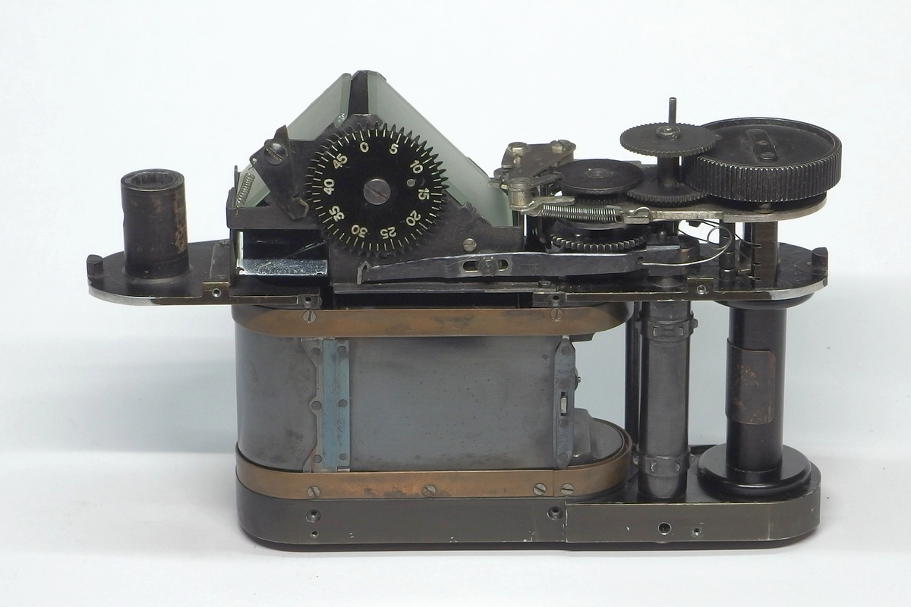
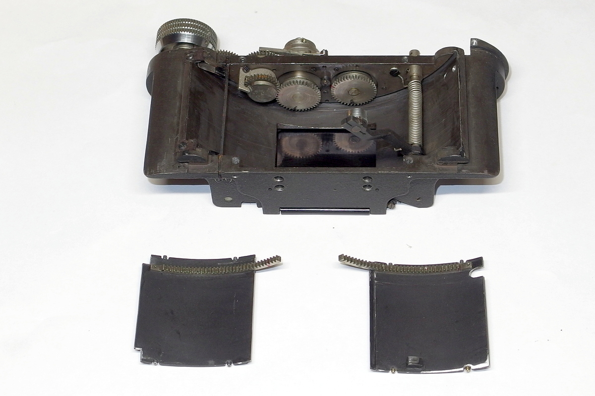
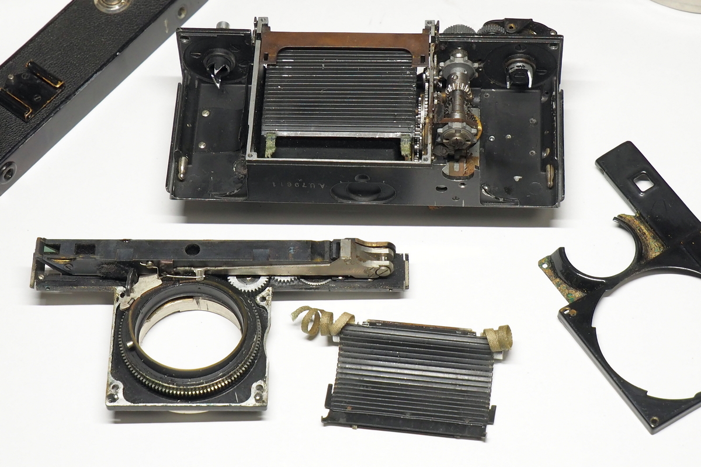
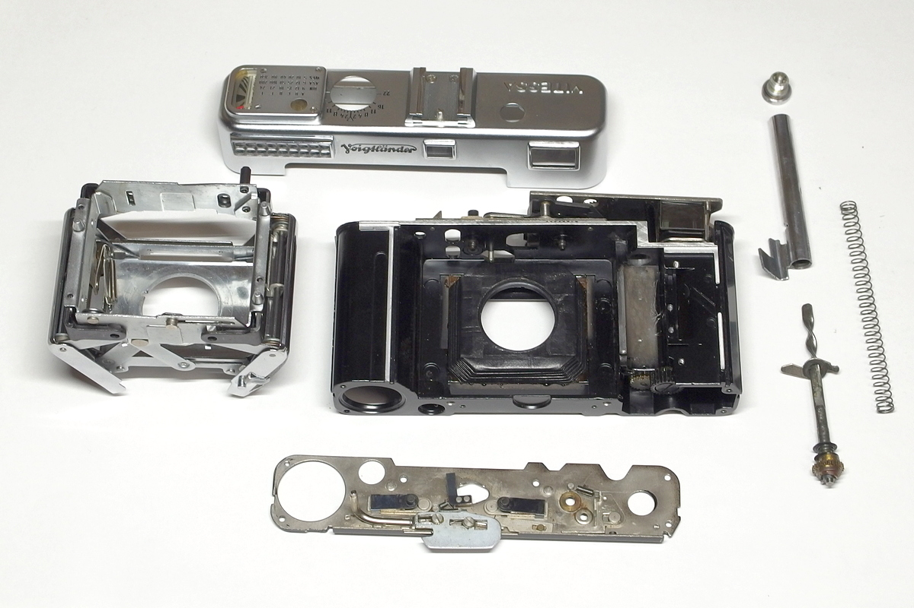

RT @yamaneko2go: 古いカメラを修理していて面白いのは、全く構造の違うカメラがあることです。「一体これはどうなってるんだ？」と思いながら分解して、「ああ、なるほど！」と思うことが楽しい。分解の仕方が全く分からないこともあり苦労しますが、分かった時は楽しい。カメラも…





古いカメラを修理していて面白いのは、全く構造の違うカメラがあることです。「一体これはどうなってるんだ？」と思いながら分解して、「ああ、なるほど！」と思うことが楽しい。分解の仕方が全く分からないこともあり苦労しますが、分かった時は楽しい。カメラも60年代以降になると大体同じ構造になっ https://t.co/gkvQG2eogK